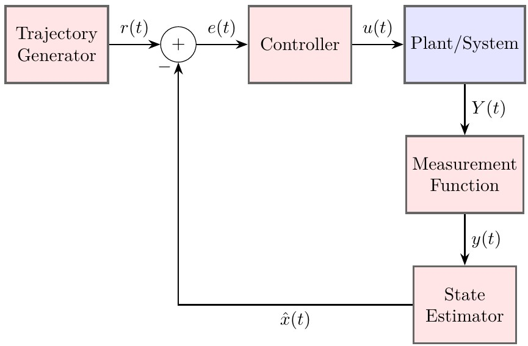

About Me
Hello! I'm Abel, a PhD student at the University of New Mexico. I am working with Dr. Wenbin Wan at the Optimization and Estimation Lab (ONELab) as a National Science Foundation Graduate Research Fellow. I received my BS in Mechanical Engineering from UNM in the spring of 2025.
My research interests are broadly about autonomous systems with a focus on state estimation and sensor fusion. However, I am also exploring topics such as machine learning, reinforcement learning, control systems, and path planning with the hope of integrating some of these topics into my PhD work.
Curriculum VitaeProjects
Autonomous System Trajectory Tracking in Unity Engine
As part of my Undergraduate Honors Thesis, I created an autonomous system simulation software framework connecting Python and Unity Engine. Using sockets, I was able to get a spherical physics object in Unity to communicate with Python to send information back and forth so that the sphere could be driven to some desired target coordinate. The figure below shows the autonomous system circuit design, with the blue block signifying execution in Unity and the red blocks signifying execution in Python.
Figure: Autonomous System Diagram
Resources to Learn State Estimation
Learning the basics of state estimation required going above and beyond my university education. Here are some resources that were very helpful in my journey.
Kalman and Bayesian Filering Jupyter Notebook
Roger Labbe created a jupyter notebook that has concise examples along with good motivation for a topic that can be very esoteric. The Jupyter notebook does not have in depth mathematical derivations or theory, it is focused on practical explanations and implementations of concepts learned in Python. This work helped me get a grip on why anyone would care about state estimation and what the implementation looks like via examples.
Optimal State Estimation by Dan Simon
Dr. Dan Simon's book on state estimation is a crucial and in-depth resource for the theoretical aspects of state estimation, especially Kalman filtering. The book includes the necessary mathematical prerequisites and derivations to gain a complete picture of the theoretical parts of state estimation. I especially found the